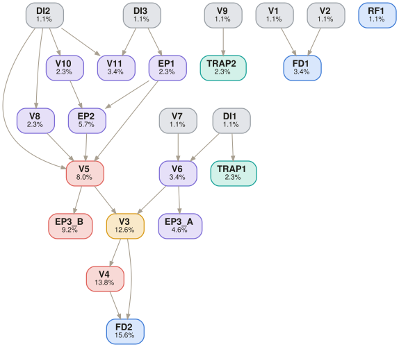

DOCX named “Zinc Future Strategy - BOD” with chosen strategy, rationale, net profits, methodology
Python or spreadsheet (probability calculations), PPTX reader (extract data from slides), Word processor (output DOCX)
Strictly closed — no web search permitted, only internal PPTX files
[SME to confirm — must be timed on actual task completion]
13-1111.00 — Management Analysts (verified via O*NET OnLine)
Reference files (inputs shown to the model)
| Strategy A.pptx | McKinsey’s recommendation: single-phase investment (2 Cr), 7-year horizon, High/Low demand scenarios. TRAP: Low Demand probability is left BLANK — must be inferred as 1 − 0.7 = 0.3. |
| Strategy B – Part 1.0.pptx | Bain’s recommendation Phase 1: investment (1 Cr), 2-year Phase 1 with expansion decision point. Diagrammatic phase-wise strategy with linguistic details requiring inference. |
| Strategy B – Part 2.0.pptx | Bain’s recommendation Phase 2: 5-year phase with year-by-year cash flows under High/Low demand, expansion toll-gating. Contains noise: discounting discussion, campaign info (red herrings). |
Task prompt — delivered verbatim to the model
Embedded cognitive trap · not shown to the model
Golden trajectory · expert-authored deterministic reasoning path
6 subtasks, 10 steps. Expected-value decision tree with latent probability inference, phased investment analysis, and conditional expansion logic.
Compute expected net profit for the single-phase McKinsey strategy, inferring the missing Low Demand probability.
Compute Phase 1 cash flows and identify the expansion decision point.
Compute Phase 2 cash flows under both expansion and non-expansion paths.
Combine Phase 1 and Phase 2 values at each branch and compute total expected net profit.
Compare expected net profits and recommend the superior strategy.
Produce the Word document with prescribed filename and content.
Golden deliverable · the expert-level output that follows the trajectory
DOCX named “Zinc Future Strategy - BOD”. Structure:
Section 1 — Board Recommendation: Strategy B (Bain’s phased approach) is recommended, delivering expected net profits of 2.14 Cr vs 0.66 Cr from Strategy A (McKinsey).
Section 2 — Strategy A Analysis: Investment 2 Cr, P(High)=0.7, P(Low)=0.3 (inferred). High scenario: 7×50L=3.5 Cr. Low: 7×10L=0.7 Cr. Expected net = 0.7×1.5 + 0.3×(−1.3) = 0.66 Cr.
Section 3 — Strategy B Analysis: Phase 1 (2yr): Investment 1 Cr, P(High)=P(Low)=0.5. High→1.3 Cr (expand, invest 0.5 Cr). Low→0.4 Cr (no expansion). Phase 2 (5yr): P(High)=0.6, P(Low)=0.4. Expected=2.54 Cr. Expansion path: 1.3+2.04=3.34 Cr. No-expansion: 0.4+2.54=2.94 Cr. Total: 0.5×3.34+0.5×2.94=3.14 Cr. Net: 3.14−1.0=2.14 Cr.
Section 4 — Methodology: Probability-weighted expected value at each decision node. Sum[ P(scenario)×Scenario Net Profit ] at each branching point. 7-year horizon per constraint. No discounting applied (no rate provided). Only High/Low scenarios per industry constraint.
Decision rationale: Key validation: The latent decomposition test is the inference of P(Low)=0.3 from a blank cell and the construction of a 4-branch decision tree for Bain with conditional expansion. A lazy model will either ignore the blank probability, assume equal probabilities, or apply discounting from red-herring content in the slides.
Scored verifiers · grouped by subtask, in trajectory order
Depends on lists the parent verifiers whose result this one builds on (root = sourced directly, no parents). DAG is the verifier's weight. Hover a result mark for the SME's justification.
| ID | Criterion | Depends on | DAG | R1 | R2 | R3 |
|---|---|---|---|---|---|---|
| V7 | Sum of demand probabilities within each strategy phase equals 1 | root | 1.1% | ✓ | ✓ | ✓ |
| DI1 | Low Demand probability for Strategy A correctly inferred as 1 − 0.7 = 0.3 (blank in PPTX) | root | 1.1% | ✓ | ✓ | ✓ |
| TRAP1 | Correctly infers missing Low probability instead of ignoring it, assuming 0, or fabricating | DI1 | 2.3% | ✓ | ✓ | ✓ |
| V6 | McKinsey’s total probable net profits = 0.66 Cr (±0.01) | DI1V7 | 3.4% | ✓ | ✓ | ✓ |
| EP3_A | McKinsey investment (2 Cr) correctly subtracted from expected cash flows | V6 | 4.6% | ✓ | ✓ | ✓ |
| ID | Criterion | Depends on | DAG | R1 | R2 | R3 |
|---|---|---|---|---|---|---|
| DI2 | Phase 1 cash flows correctly extracted: High=1.3 Cr (50L+80L), Low=0.4 Cr (10L+30L) | root | 1.1% | ✓ | ✓ | ✓ |
| V8 | Bain scenario does NOT include expansion in Phase 2 when Low demand in Phase 1 | DI2 | 2.3% | ✓ | ✓ | ✓ |
| V10 | Bain scenario strictly includes expansion in Phase 2 when High demand in Phase 1 | DI2 | 2.3% | ✓ | ✓ | ✓ |
| ID | Criterion | Depends on | DAG | R1 | R2 | R3 |
|---|---|---|---|---|---|---|
| DI3 | Phase 2 cash flows correctly summed: High=3.1 Cr, Low=1.7 Cr (5 years each) | root | 1.1% | ✓ | ✓ | ✓ |
| EP1 | Expected value formula correctly applied at Phase 2: 0.6×3.1 + 0.4×1.7 = 2.54 Cr | DI3 | 2.3% | ✗ | ✗ | ✗ |
| EP2 | Expansion cost (0.5 Cr) subtracted only in expansion scenario, not in non-expansion | EP1V10 | 5.7% | ✓ | ✓ | ✓ |
| ID | Criterion | Depends on | DAG | R1 | R2 | R3 |
|---|---|---|---|---|---|---|
| V11 | Exactly 2 scenarios for McKinsey and 4 sub-scenarios for Bain (Phase1×Phase2 branches) | DI2DI3 | 3.4% | ✗ | ✗ | ✗ |
| V5 | Bain’s total probable net profits = 2.14 Cr (±0.007) | EP2V8DI2EP1 | 8.0% | ✗ | ✗ | ✗ |
| EP3_B | Bain investment (1 Cr) correctly subtracted from total expected value (3.14 − 1.0 = 2.14) | V5 | 9.2% | ✗ | ✗ | ✗ |
| ID | Criterion | Depends on | DAG | R1 | R2 | R3 |
|---|---|---|---|---|---|---|
| V3 | Finally recommended strategy is Bain’s Strategy (2.14 Cr > 0.66 Cr) | V6V5 | 12.6% | ✓ | ✓ | ✓ |
| V4 | Rationale outlines probability-weighted expected value methodology | V3 | 13.8% | ✓ | ✓ | ✓ |
| V9 | No use of discounting methodology (no discount rate provided in prompt) | root | 1.1% | ✓ | ✓ | ✓ |
| TRAP2 | Does not apply NPV, DCF, or discounting despite red-herring mentions in PPTX | V9 | 2.3% | ✓ | ✓ | ✓ |
| ID | Criterion | Depends on | DAG | R1 | R2 | R3 |
|---|---|---|---|---|---|---|
| V1 | Output file named “Zinc Future Strategy - BOD” | root | 1.1% | ✓ | ✓ | ✓ |
| V2 | Output format is a Word document (DOCX) | root | 1.1% | ✓ | ✓ | ✓ |
| FD1 | File has correct name AND correct format | V1V2 | 3.4% | ✓ | ✓ | ✓ |
| FD2 | Document contains: chosen strategy, rationale, net profits from each recommendation, methodology | V3V4 | 15.6% | ✓ | ✓ | ✓ |
| RF1 | No web search used; all data from internal PPTX files only | root | 1.1% | ✓ | ✓ | ✓ |
Verifier dependency graph · DAG weights shown on each node
Edges run parent → child. Deeper nodes carry more weight; root checks gate the chains above them.

Files
Model output — one folder per run
Response 1 is the best because it correctly infers the missing probability in Strategy A, follows the expected-value methodology consistently, and arrives at the correct recommendation (Bain) while satisfying all structural and document-format requirements. Although it makes the same Bain aggregation error as the other responses, its reasoning is the clearest and most closely aligned with the intended decision framework
tsk_4726551239 · 23 verifiers